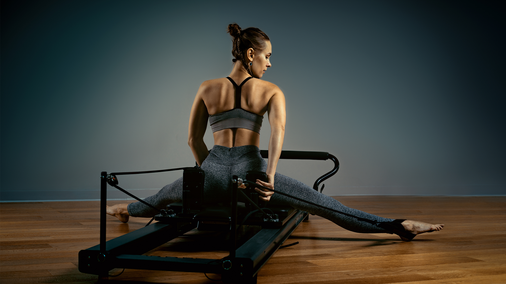
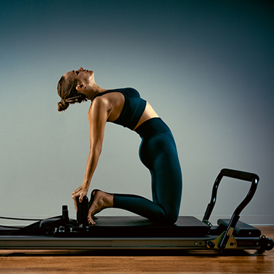
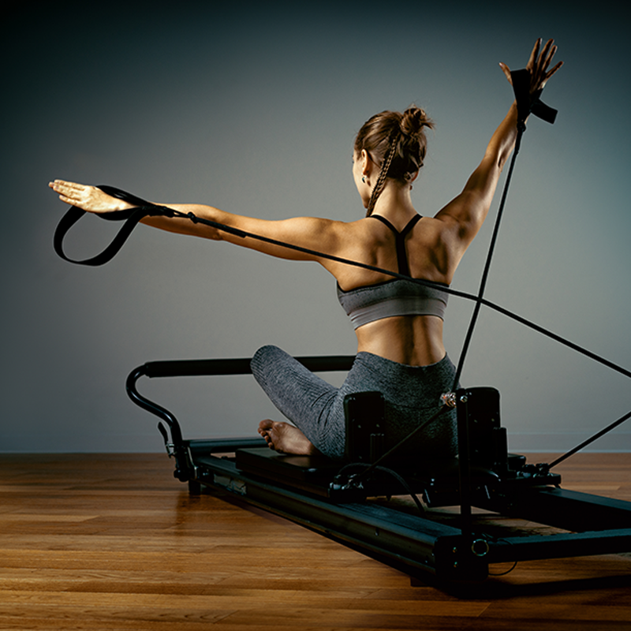
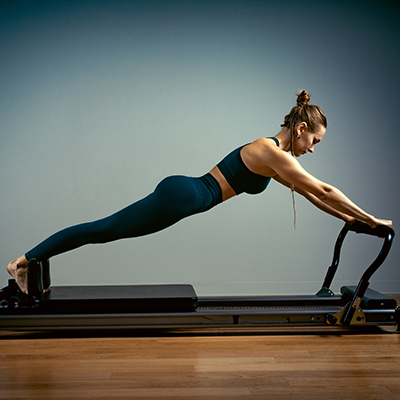
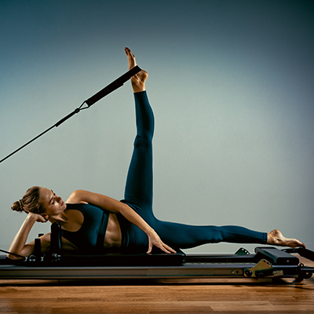

Adresa
Drumul Dealul Bradului 97, Bucuresti

Este despre cum te simti. Despre a reveni. Despre a face din miscare parte din viata ta.

Core Society este un studio boutique de Reformer Pilates situat pe Drumul Dealul Bradului 97, Bucuresti. Clasele se desfasoara in grupe mici, conduse de instructori certificati, pentru atentie personalizata si progres real.
Oferim clase de Reformer Pilates, Mat Pilates, functional training si programe dedicate seniorilor. Dar nu ne oprim aici - organizam evenimente sociale, workshop-uri si programul Mom O'Clock pentru mamele din comunitatea noastra.
Descoperă tot ce Core Society are de oferit
Clase pe aparate reformer, pentru tonifiere, flexibilitate si postura corecta.
Clase pe saltea care imbunatatesc forta core-ului si echilibrul corpului.
Zona dedicata antrenamentelor functionale pentru forta si rezistenta.
Programe dedicate seniorilor, adaptate nevoilor si ritmului lor.
Brunch-uri, workshop-uri si expozitii de arta in comunitatea noastra.
Evenimente speciale dedicate mamelor din comunitatea Core Society.
Aparatura profesionala
Mai mult decat un studio
Grupuri mici, atentie maxima
Drumul Dealul Bradului 97
Miscarea nu e o provocare de 30 de zile. Este stilul tau de viata.
Sedinte One-to-One la pret de grup
Prima sedinta - 50 lei, dedusa din abonament
Un spatiu creat pentru miscare si comunitate



Tot ce trebuie sa stii despre Core Society
Reformer Pilates este o forma de Pilates realizata pe un aparat specializat numit Reformer, care foloseste rezistenta prin arcuri pentru a construi forta, a imbunatati flexibilitatea si a corecta postura. La Core Society folosim echipamente Reformer de nivel profesional in clase cu grupe mici, in Bucuresti.
Reformer Pilates foloseste un aparat cu rezistenta reglabila prin arcuri, permitand o gama mai larga de exercitii si intensitati. Mat Pilates se desfasoara pe saltea, folosind greutatea corpului, si se concentreaza pe forta core-ului si echilibru. Core Society ofera ambele tipuri de clase in studioul din Bucuresti.
Pilates este recunoscut pentru ameliorarea durerilor de spate prin intarirea muschilor profunzi ai core-ului care sustin coloana vertebrala, imbunatatirea posturii si cresterea flexibilitatii. Instructorii certificati de la Core Society pot adapta exercitiile pentru problemele de spate.
Nu este necesara nicio experienta anterioara. Core Society primeste incepatori si ofera programul Friendly Start - prima sedinta costa doar 50 RON, suma care se deduce din abonament daca continui. Grupele mici permit instructorilor sa acorde atentie individuala fiecarui participant.
Poarta haine sportive confortabile, pe corp, care permit miscare libera. Evita hainele largi care se pot prinde in aparatul Reformer. Sosetele cu grip sunt recomandate pentru clasele de Reformer. Iti recomandam sa aduci un prosop mic si o sticla de apa.
Core Society functioneaza ca un studio boutique cu grupe mici pentru a asigura atentie personalizata din partea instructorilor certificati. Numarul redus de participanti permite corectarea formei si adaptarea exercitiilor la nevoile individuale, oferind o experienta semi-privata.
Core Society este situat pe Drumul Dealul Bradului 97, Bucuresti, Romania. Poti gasi directii prin Google Maps pe site-ul Core Society la www.coresociety.ro.
Core Society ofera trei abonamente: GREEN (500 RON pentru 4 sedinte, valabil 30 zile), WHITE (1.000 RON pentru 10 sedinte, valabil 30 zile) si BLACK (1.200 RON pentru 12 sedinte, valabil 60 zile). Exista si o oferta de lansare cu sedinte One-to-One la pret de grup.
Da. Core Society ofera programul Friendly Start - prima sedinta costa doar 50 RON. Daca achizitionezi un abonament ulterior, cei 50 RON se deduc din pretul abonamentului. Astfel poti testa studioul si clasele inainte de a te angaja la un plan complet.
Da. Core Society ofera clase dedicate seniorilor (Clase pentru Seniori), adaptate ritmului si nevoilor lor. Pilates este excelent pentru seniori deoarece imbunatateste echilibrul, flexibilitatea, mobilitatea articulatiilor si densitatea osoasa prin miscari controlate si cu impact redus.
Functional training la Core Society se concentreaza pe exercitii care imita miscarile din viata de zi cu zi pentru a imbunatati forta generala, rezistenta si mobilitatea. Studioul are o zona dedicata antrenamentelor functionale care completeaza antrenamentul de Pilates.
Pentru rezultate optime, se recomanda 2-3 sedinte de Pilates pe saptamana. Abonamentele Core Society sunt concepute pentru practica regulata: planul GREEN ofera 4 sedinte pe luna (o data pe saptamana), iar planurile WHITE si BLACK ofera 10-12 sedinte pentru cei care se antreneaza de 2-3 ori pe saptamana.
Pilates poate fi benefic in timpul sarcinii cand este practicat sub indrumarea corecta, deoarece intareste planseul pelvian, imbunatateste postura si reduce durerile de spate. Este important sa consulti medicul inainte. Instructorii Core Society pot modifica exercitiile pentru a fi sigure si eficiente pentru clientele insarcinate.
Clasele in grupe mici la Core Society ofera o experienta semi-privata in care instructorii pot oferi corectii si atentie individuala. Acest lucru duce la o forma mai buna, progres mai rapid si risc redus de accidentare, pastrand in acelasi timp motivatia si aspectul social al exercitiului in grup.
Core Society este situat pe Drumul Dealul Bradului 97, Bucuresti, intr-o zona rezidentiala care ofera de obicei parcare pe strada in apropiere. Pentru informatii specifice despre parcare, contacteaza studioul direct la +40 754 439 371 sau prin WhatsApp.
Poti rezerva clase la Core Society prin platforma online de rezervari TeamUp. Alternativ, poti contacta studioul telefonic la +40 754 439 371, prin WhatsApp sau prin Instagram @the_core_society.
Mom O'Clock este un program Core Society de evenimente si activitati speciale dedicate mamelor din comunitate. Ofera un spatiu in care mamele pot face miscare, socializa si sa isi acorde timp pentru bunastarea fizica si mentala, fiind parte dintr-o comunitate primitoare.
Da. Core Society organizeaza regulat evenimente sociale comunitare, inclusiv brunch-uri, workshop-uri si expozitii de arta. Filosofia studioului este "Mai mult decat Pilates", punand accent pe comunitate si bunastare alaturi de fitness-ul fizic.
Core Society angajeaza instructori certificati de Pilates, pregatiti atat in tehnicile Reformer cat si Mat Pilates. Instructorii sunt calificati sa lucreze cu populatii diverse, inclusiv incepatori, seniori si clienti cu conditii specifice, asigurand sedinte sigure si eficiente.
Da, Reformer Pilates este sigur si potrivit pentru incepatori. Rezistenta reglabila prin arcuri a aparatului Reformer permite modificarea exercitiilor pentru orice nivel de fitness. Clasele in grupe mici si instructorii certificati de la Core Society asigura ghidare corecta din prima sedinta.
Core Society este deschis de luni pana vineri intre 7:00 si 21:00, si sambata intre 9:00 si 14:00. Studioul este inchis duminica. Pentru programul actualizat si orele claselor, verifica platforma de rezervari sau contacteaza studioul direct.
Core Society accepta plata cash si cu cardul. Toate preturile sunt afisate in lei (RON). Abonamentele pot fi achizitionate direct la studio.
Core Society ofera o sedinta introductiva Friendly Start la pretul de 50 RON, care se deduce din orice abonament achizitionat ulterior. Oferta regulata a studioului este bazata pe abonamente, planul GREEN (4 sedinte pentru 500 RON) fiind cel mai accesibil punct de intrare.
Core Society se distinge ca un studio boutique cu un puternic accent pe comunitate. Pe langa clasele de Pilates, studioul ofera functional training, programe pentru seniori, initiativa Mom O'Clock si evenimente sociale precum brunch-uri si expozitii de arta. Motto-ul "Mai mult decat Pilates" reflecta abordarea holistica a bunastarii.
Poti contacta Core Society telefonic la +40 754 439 371, prin WhatsApp la acelasi numar, prin Instagram @the_core_society sau vizitand studioul pe Drumul Dealul Bradului 97, Bucuresti, Romania. Rezervarile online sunt disponibile prin TeamUp.
Drumul Dealul Bradului 97, Bucuresti